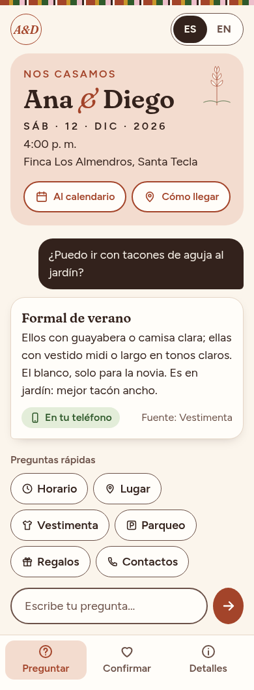
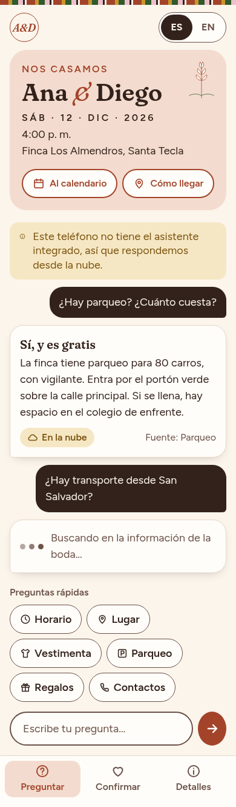
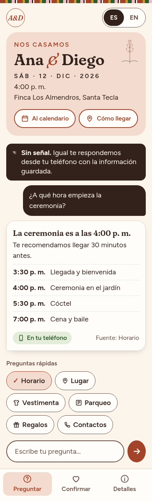
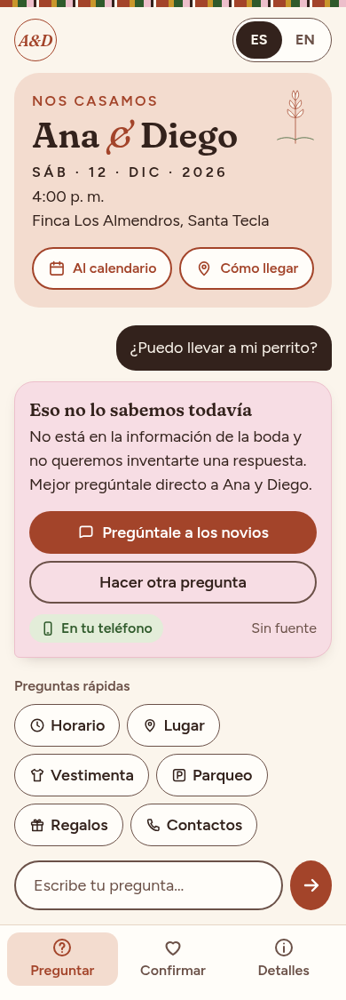
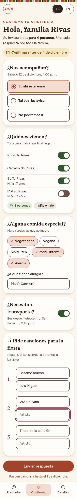
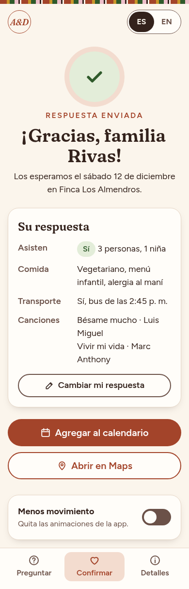
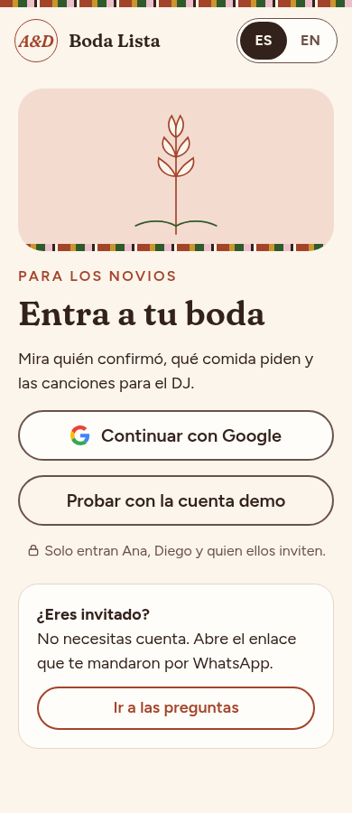
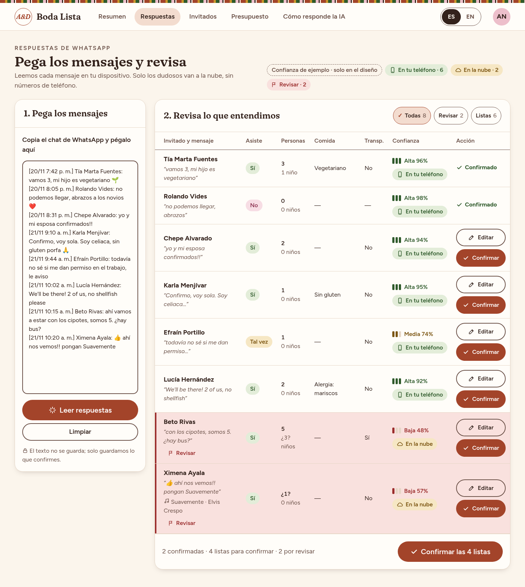
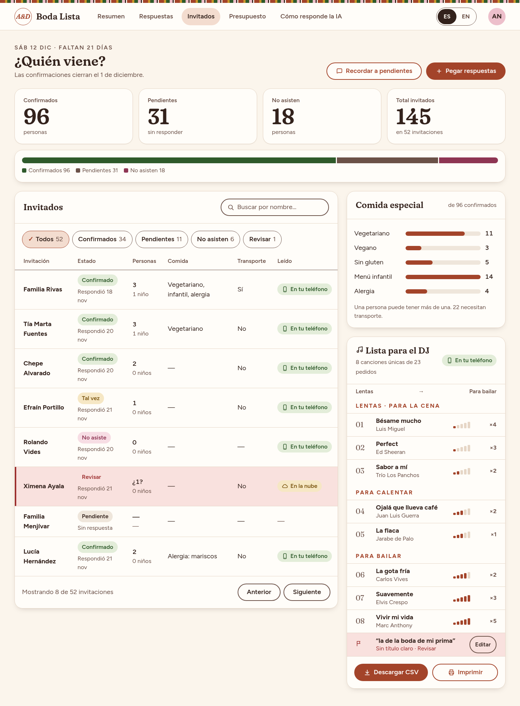
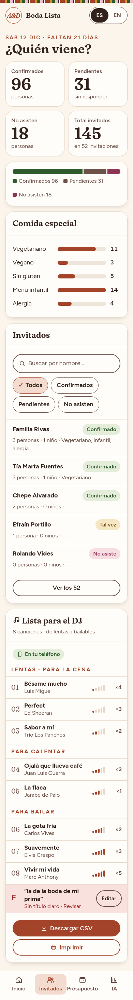

Todas las pantallas · datos ficticios (Ana & Diego, sáb 12 dic 2026, Finca Los Almendros, Santa Tecla) · números de IA y cotizaciones = datos de ejemplo
Invitados · F1 preguntas y F2 RSVP (390)

guest-qa-device

guest-qa-cloud

guest-qa-offline

guest-qa-idk

rsvp-form

rsvp-success

sign-in
Novios · respuestas y lista (1440 / 390)

couple-parse

headcount-desktop

headcount-mobile
Cómo responde la IA · escritorio 1440 (cargado, cargando, vacío, error, sin conexión, pocos datos, sin umbral aún)